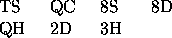

| Shuffling Patience |
Many children enjoy playing cards, especially some of the simpler forms of patience or solitaire, yet many of them find it difficult to shuffle the cards adequately. The following `patience' game assists this as well as aiding card recognition and boosting simple arithmetic skills. The essence is to `cover' exposed pairs or triples of cards that have a specific relationship to each other.
A deck of cards consists of 52 cards, in four suits of 13 ranks. The suits are spades, hearts, clubs, diamonds and the ranks run from ace (face value one), 2, 3, 4, 5, 6, 7, 8, 9, 10, jack, queen and king. During play up to 16 piles in a 4 by 4 grid may be created if necessary, although usually fewer are needed. Deal cards, face up, in this 4 4 grid. Before playing each card check whether a pair or triple of cards already played can be covered. A pair of cards can be covered if they are of rank ace to ten and their face values add to 11. A triple of cards can be covered if they form the set {jack, queen, king}. If no pairs or triples exist, a new pile is started.
Where more than one pair and/or triple exists, only one is covered before reassessing. Cards are always covered in the same order they were dealt, that is left to right, top to bottom. The first card covered shall be the eligible card nearest the start of play. The second card covered (and also the third for a triple) is its partner nearest the start of play. Thus if the first part of a deck consists of: TS QC 8S 8D QH 2D 3H KH 9H..., then the first seven cards will be played as follows:

The next two cards (KH 9H) will then cover the pair 8S and 3H respectively. Note that covering pairs or triples is considered an indivisible operation, and thus further covering operations are not considered until it is complete.
Write a program to simulate the playing of this game. Your program must read in one or more decks of cards, simulate the play and determine how many cards are on each pile at the end. If it is not possible to remain within the stipulated 16 piles, terminate that deal with a message as described below.
Input will consist of a series of decks of cards, each deck specified as 4 lines each containing 13 cards. Each card will be specified by two characters, a rank (A, 2, 3, 4, 5, 6, 7, 8, 9, T, J, Q, K) followed by a suit (S, H, C, D). Cards will be in the order in which they will be played. The file will be terminated by a line consisting of a single #.
Output will consist of a series of lines, one line for each deck in the input. Each line shall start with the deck number, followed by a colon. If it is not possible to play a deck within the specified 4 4 grid, then write a space followed by the message `Overflowed on card no' followed by the number of the card about to be dealt. If it is possible to play the entire deck, then write out the non-zero numbers that represent the numbers of cards in each pile when the deck is fully dealt.
All numbers are to be right justified in a field 3 characters wide.
TS QC 8S 8D QH 2D 3H KH 9H 2H TH KS KC 9D JH 7H JD 2S QS TD 2C 4H 5H AD 4D 5D 6D 4S 9S 5S 7S JS 8H 3D 8C 3S 4C 6S 9C AS 7C AH 6H KD JC 7D AC 5C TC QD 6C 3C #
1: 8 6 7 4 3 5 4 4 2 5 4